Aplicalicaciones con estructura compleja:
Inportamos las llaves
Creamos el archivo fuente
Actualizamos
Instalación: * Plataforma de 32bits
* sudo apt-get install mongodb-10gen
Plataforma de 64bits
Sistemas Linux
Sistemas Windows
Sistemas Linux
Sistemas Windows
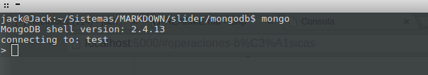
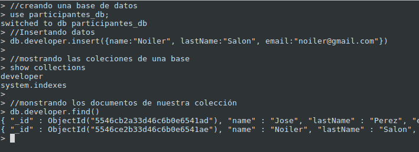
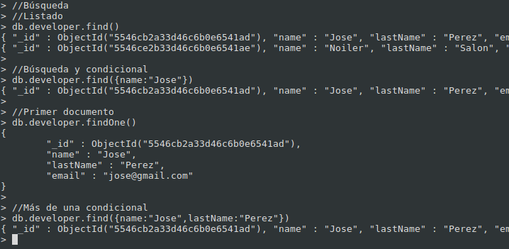
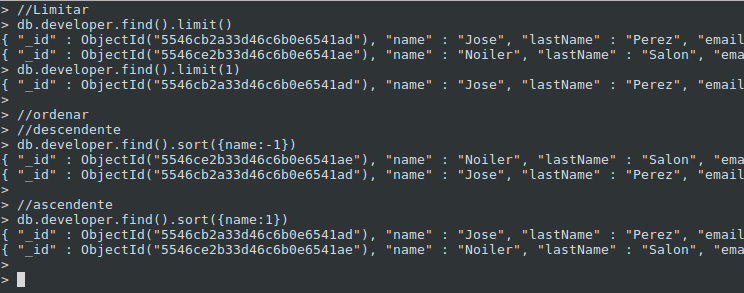
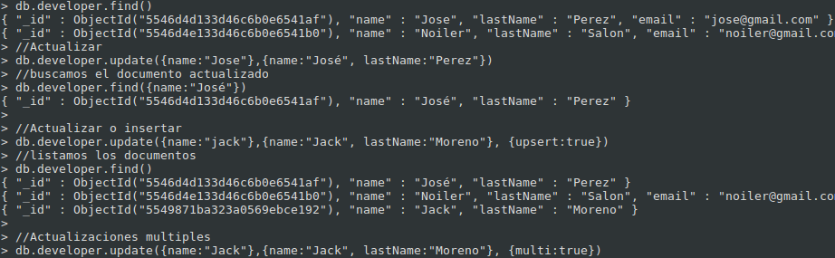
$set : permite especificar los campos en el documento.
$inc: permite adicionar sobre el campo del tipo entero en un campo.
$rename : permite reescribir el campo.
$unset : permite eliminar un campo.
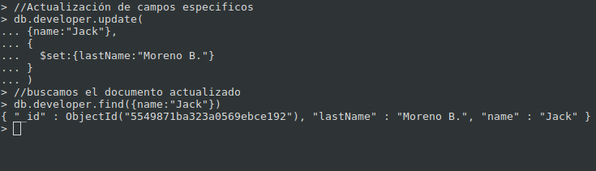
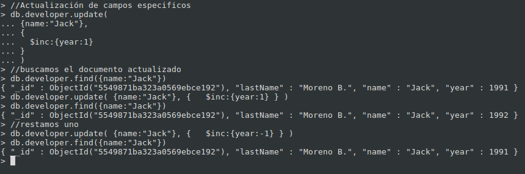
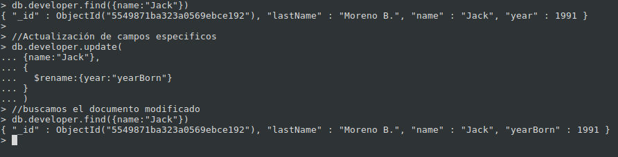
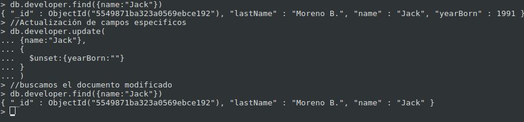
$pop - elimina el primer o último valor de un arreglo.
$pull - elimina los valores de un arreglo que cumplan con el filtro indicado.
$pullAll - elimina los valores especificados de un arreglo.
$push - agrega un elemento a un arreglo.
$addToSet - agrega elementos a un arreglo solo sí estos no existen ya.
$each
db.autores.update( { nombre: ‘Ricardo’ }, { $push: { secciones : { $each : [‘Haskell’,’Go’,’ActionScript’] } } }); })
* *Embeber:* Incrustar un documento dentro de otro
* *Referenciar:* replicar las funciones de las llaves foraneas
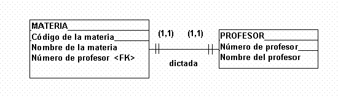
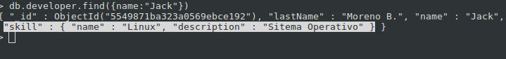
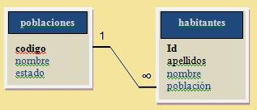
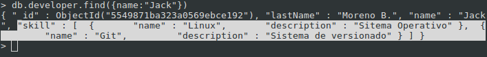
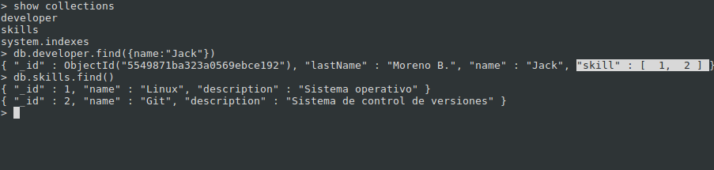
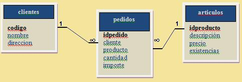
Es una estructura de datos que toma los valores de campos particulares se almacena en un espacio de rápido acceso
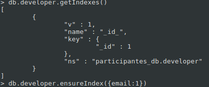
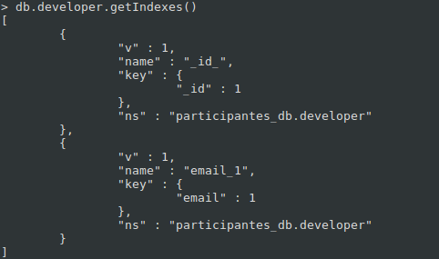
db.developer.ensureIndex({ skill: 1 });
db.developer.ensureIndex({ skill.nombre: 1 });
db.developer.ensureIndex({ email : 1 }, { unique : true })
db.developer.ensureIndex({ email : 1 }, { sparse : true })
db.developer.dropIndex({ email : 1 })
db.developer.dropIndexes()
db.counter.find()
{ “id” : “skillsid”, “autoId”: 1}
function getNextId(name){ var result = db.counter.findAndModify({ query:{_id:name}, update:{$inc:{autoId:1}}, new: true}); return result.autoId; }
db.skill.insert({ id:getNextId(skillsid), name:”Phalcon”, description:”Framework PHP” })
db.skills.find({ _id : { $gt : 1 } })
db.skills.find({ _id : { $in : [1, 2, 3] } })
db.skills.find({ $or : [{_id: 1}, {name: ‘Git’}] })
db.skills.find({ _id : { $not: { $gt: 2 }} })
db.developer.find({ apellido: { $exists: true }})
Reiniciamos los servicios de mongodb
Para loguearnos hacemos lo siguiente > db.auth(‘jack’,’123456’)
mongodump --port 27017 --out ./dump_mydb --db mydb --host localhost --collection participante
mongorestore -db nameDB path/backup
db.copyDatabase(‘OriginDB’,’remoteDB’,’192.168.0.100:27017’)
| Table of Contents | t |
|---|---|
| Exposé | ESC |
| Full screen slides | e |
| Presenter View | p |
| Source Files | s |
| Slide Numbers | n |
| Toggle screen blanking | b |
| Show/hide slide context | c |
| Notes | 2 |
| Help | h |